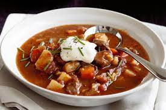

Goulash soup

Description
Goulash (Hungarian: gulyás), is a soup or stew of meat and vegetables seasoned with paprika and other spices.
Originating in Hungary, goulash is a common meal predominantly eaten in Central Europe but also in other parts of Europe.
It is one of the national dishes of Hungary and a symbol of the country.
Ingredients
- 3 tablespoons oil or lard
- 5 medium onions, diced
- 2 1/2 teaspoons salt
- 2 1/2 liters (2 1/2 quarts) water, plus a few extra spoonfuls
- 3 tablespoons Hungarian paprika (sweet)
- 1/2 teaspoon black pepper
- 1 tablespoon caraway seeds
- 1.5 kg (3 1/4 lbs) beef, chopped into bite-sized pieces
- 2 cloves of garlic, chopped
- 5 medium carrots, sliced into bite-sized rounds
- 2 medium parsnips, sliced into bite-sized rounds
- 2 large potatoes, cubed
- 2 tomatoes, diced
- Csipetke (pinched pasta), optional
Instructions
- Heat the oil or lard in a large pot (preferably a Dutch oven).
Add the onions along with a few spoonfuls of water (so they don’t brown) and a pinch of the salt.
Cook slowly over very low heat for about 15 to 20 minutes, or until the onions are clear and glassy.
- Remove from the heat and add the paprika, pepper, and caraway seeds.
Stir quickly to combine and add a tiny bit of water (to prevent the paprika from burning).
- Add the meat and garlic and cook over high heat, stirring, until the meat is slightly browned (about ten minutes).
Turn the heat down to low, add a few spoonfuls of water, and cook for about 15 more minutes, until the meat is nearly cooked through.
- Add the rest of the water and keep cooking, over low heat, for at least an hour, or until the meat is cooked and nearly tender enough to serve.
This could take hours, depending on the cut of beef you used.
- When the meat is nearly done, add the tomatoes, carrots, parsnips, and potatoes and cook for about 15 more minutes, or until they are tender
(being careful not to overcook them). Taste the soup and add more salt and pepper, if needed.
- If you are using csipetke or another kind of small pasta, add it to the soup before serving. You can serve this soup with hot pepper or hot pepper paste.
Back